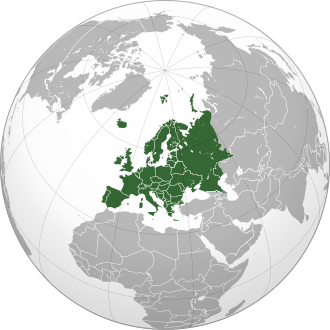
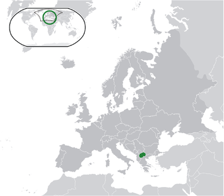
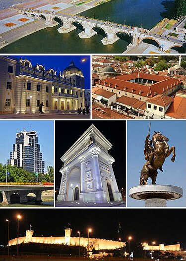
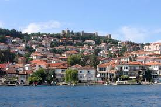
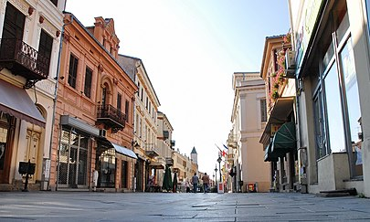
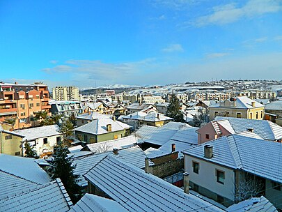

LIST
Evropa
Makedonija
Skopje
Centar
Bulevar Ilinden
Aerodrom
Cair
Gjorche Petrov
Ohrid
Bitola
Kumanovo
Tetovo
Veles
EVROPA
Name
Area
Population
Image Link
Evropa
10,180,000 km2
745,173,774

Makedonija
25.436 км2
1.836.713

Skopje
571,46 км2
422,540

Ohrid
389,93 км2
51.428

Bitola
422,39 км2
71,808

Kumanovo
509.48 км2
75,051
